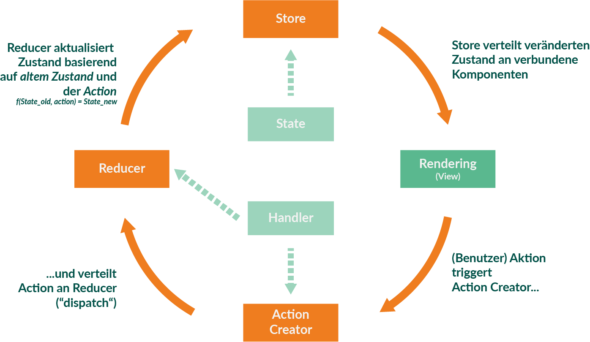

Overview of current (JavaScript) frontend architectures
Slides: http://djcordhose.github.io/architecture/2018_arch_topconf.html
Wir nehmen Frontend-Architektur nicht für voll
Zitate
- Frontend-Architektur: Ich dachte sowas gibt es gar nicht
- Das Frontend kloppen wir am Ende einfach irgendwie drauf
- Architektur für ein bisschen CSS-Pixel-Geschubse?
Classic Web Applications

- Browser sends HTTP Request
- Content is rendered on the Server
- HTML is sent back to the Browser
- Browser only shows the page to the user
- Each interaction repeats this round-trip
SPAs
Move your Application to the Client

- only one (single) HTML page that mainly loads JavaScript and CSS
- Server has Data-API (JSON/REST API)
- Server can still hold Business Logic (or it is on the client only)
- allows for Offline and best UX

@wycats : https://twitter.com/wycats/status/930463710941872128

Single-Page Applications
Components with Templates
A SPA is composed of (business) components:
- Templates describe the UI of the component
- But now:
- Logic is part of the component
- Logic is a "first-class" citizen and no longer a "loose" snippet (like in jQuery)
- Logic is fully executed on the client
- Prominent Frameworks: React, Angular, and Vue
Server Side
// server.js
const express = require("express");
const cors = require('cors')
const app = express();
app.use(cors())
app.get("/:greeting", function(req, res) {
const greeting = req.params.greeting;
res.json({ message: `${greeting}, World` });
});
app.listen(3000, function() {
console.log("Greeting app listening on port 3000!");
});
node server.js
// restarts with every change
nodemon server.js
Services
ng generate service greeting
const urlBase = "http://localhost:3000";
export interface Message {
message: string;
}
@Injectable({
providedIn: "root"
})
export class GreetingService {
constructor(private http: HttpClient) {}
requestGreeting(name: string): Observable<Message> {
const url = `${urlBase}/${name}`;
return this.http.get<Message>(url);
}
}
Using Services
Access it using type based dependecy injection
constructor(private greetingService: GreetingService) {
}
Dealing with Observables
load(): void {
this.greetingService.requestGreeting(this.title)
.subscribe(greeting => this.greeting = greeting.message);
}
Composing an Application from Components
Smart and Dumb Components*
*also known as Mediator Pattern with Web Components / Polymer
Smart Components
- Managing (part of) the application state
- Contain UI logic
- Pass parts of the state as immutable data to subcomponents
- Pass callbacks to subcomponents for interaction
- Mostly domain-specific, not intended to be reusable
Aka Container
Dumb Components
- only for presentation, no logic
- but might contain own ("transient") state
- have no knowledge or dependencies to their surrounding components
- children of Dumb Components are usually other Dumb Components (but there are exceptions)
- reusable
Aka Presentational Component or just Component
Smart Component
@Component({
template: `<sub [greeting]={{greeting}} (onSend)="sent($event)">`
})
export class AppComponent {
// component state
private greeting: string = 'Hiho';
// dependency injection
constructor(private greetingService: GreetingService) {
}
// "Business Logic" delegated to service
sent(greeting) {
this.greeting = this.greetingService.greetBack(greeting);
}
}
Dumb Component
@Component({
selector: 'sub',
template: `
{{greeting}}, World
`,
})
export class SubComponent {
@Input() greeting: string;
// rxjs observer
@Output() onSend = new EventEmitter();
// no business logic, just event emitting
send() {
this.onSend.emit(this.greeting);
}
}
Example

What would be candidates for Smart-/Dumb-Components?
Dumb

Smart

Code Sample: Intermediate Dumb Component
@Component({
selector: 'app-container',
template: `
Hello!
Usage from Smart Component
Title
Leaf Level Dumb Component
@Component({
selector: 'app-title',
template: `
Button
Button: Leaf Level Dumb Component
@Component({
selector: 'app-button',
template: ``
})
export class ButtonComponent {
@Input() private title = '';
@Output() send = new EventEmitter();
}
Statemanagement using a library
Redux as an Architectural Pattern
Redux
- Central state management: one store for whole app, like a database
- External state management: extract logic from the (UI-)components
Redux is independent of UI framework
Bindings exist for popular UI frameworks
- React: http://redux.js.org/docs/basics/UsageWithReact.html
- Angular: https://github.com/ngrx/platform https://github.com/vuejs/vuex
- Web Components (Polymer): Redux is recommended implementation of Global Mediator Pattern, https://twitter.com/DJCordhose/status/899943415353311232 https://tur-nr.github.io/polymer-redux/
Redux extracts responsibility out of the UI framework
Redux Pattern
Resulting Architecture

Reducer
export function counterReducer(state: number = 0, action: Action) {
switch (action.type) {
case INCREMENT:
return state + 1;
case DECREMENT:
return state - 1;
case RESET:
return 0;
default:
return state;
}
}
import { NgModule } from '@angular/core';
import { StoreModule } from '@ngrx/store';
import { counterReducer } from './counter';
@NgModule({
imports: [StoreModule.forRoot({ count: counterReducer })],
})
export class AppModule {}
Connection to Store
interface AppState {
count: number;
}
@Component({
template: `Current Count: {{ count$ | async }}`
})
export class CounterComponent {
count$: Observable<number>;
constructor(private store: Store<AppState>) {
this.count$ = store.pipe(select('count'));
}
reset() {
this.store.dispatch({ type: RESET });
}
}
Different Types of State

@ngrx/effects
@Injectable()
export class RemoteEffects {
constructor(private greetingService: GreetingService, private actions$: Actions) {}
@Effect()
login$: Observable = this.actions$.pipe(
ofType('LOAD'),
mergeMap(action => this.greetingService.requestGreeting('huhu').pipe(
// If successful, dispatch success action with result
map(data => ({ type: 'SET', payload: data.message.length })),
// If request fails, dispatch failed action
catchError(() => of({ type: 'FAILED'}))
))
);
}
import { EffectsModule } from '@ngrx/effects';
import { RemoteEffects } from './ngrx-sandbox/remote.effects';
@NgModule({
imports: [EffectsModule.forRoot([RemoteEffects])],
})
export class AppModule {}
Is anyone really using this?
 XING and many others use React and Redux
XING and many others use React and Redux
Redux
Architectural guidance
- Uni-directional data flow
- Central and immutable state: store
- Only reducers are allowed to modify state
- State moves from Smart Components to store
- UI logic moves from Smart Components in Action-Creators / Services and Reducer
- Asynchronous code only in Action-Creators / Services or Effects
- Initializing of the app with central action
Wrap Up
Architectural Patterns for Angular Apps
- Dependecy Injection
- Services
- Observables for everything
- Composing your Application into Smart and Dumb Components
- Redux
- for large applications with many dependencies between parts / components
- provides architectural guidance where which part of the application goes